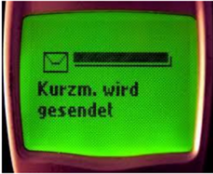

1990-1995
-
Avanços tecnológicos:
- 1991: Surge o Linux, baseado no Unix

- 1994: SMS traz o texto aos celulares;

- Filmes/desenhos/séries:
- 1990: Demi Moore e Patrick Swayze vivem uma história de amor que
ultrapassa os limites da vida, em Ghost (Ghost - Do Outro Lado da Vida), que
dá a Whoopi Goldberg o Óscar como melhor atriz coadjuvante.
- Músicas de sucesso:
- 1991: começa a segunda edição do festival musical Rock in Rio.
- Acontecimentos diversos:
- 1991: Ayrton Senna conquista o tricampeonato mundial de Fórmula 1.